Moving elements within the bounds of a single capella model is done via drag and drop in the capella project explorer. However, it is not possible to drag an element out of a capella model and drop it into one of its referenced libraries. This is to prevent cycles in the project/library graph. It is however still possible to move elements from a capella model to a library with the help of a special tool, and that tool is called the Transfer View. Before using the Transfer View, please read this documentation carefully.
When the Transfer View (Window->Show View->Transfer) is opened for the first time, it looks like this:
1. The Selection Area shows all elements that should be moved in bold. Drag/Drop model elements from the Capella Project Explorer over this area to fill the view. If the dropped element has children, the children will be moved together with the selected element. Another way to add elements to the Transfer View Selection Area is via the Send To Transfer View context menu. To remove a selected element from the view, the Unstage Element ( ) action can be selected either via the context menu of the selection tree, or in the selection tree toolbar to the right side of the tree.
2. The Destination Area shows the possible destinations for elements in the selection area. To set a new destination for a selected element, drag/drop the element from the selection area over a suitable parent in the destination area. Elements in the selection area for which a destination element has been selected will appear in green. To clear an already set destination for a selected element, use the Clear Parent ( ) action either via the Destination tree context menu, or the corresponding toolbar button to the right side of the tree.
3. The execute button is initially disabled. As soon as a destination is set for all selected elements, and no referential problems (see below) are detected, the execute button will be enabled. Selecting the button moves elements to their new destination and performs a semantic validation (see below). The move operation will be also be logged to the Capella information view (Window->Show View->Information). Note that the target library must be referenced in read/write mode by the project.
4. The reset button will reset the view to its initial empty state.
It is rarely ever possible to move an element in isolation. Usually, an element is part of a graph, connected to other elements that belong together: For example a Class B that extends another Class A cannot be moved without moving A too, since that would introduce a reference cycle between the source project and the target library. The Transfer View detects this and visualizes it as follows: When Class B is dropped onto the Selection Area, the Generalization child of A will be marked red. Hovering over the marked element will show additional informations about this illegal backreference:

It is possible to click on the hyperlink in the tooltip to select the target element in the Capella project explorer. To ease navigation to problematic elements, the total number of problematic child elements is shown in red parentheses next to each element in the tree.
As long as one or more backreferences are present, the execute button remains disabled. There are always multiple solutions to a backreference: In this example, either break the generalization, or add Class A to the selection area. The latter is done either via manual drag/drop, or by using one of the provided utility actions for backreference resolution:
Both actions can be invoked either from the context menu of a marked element, or via the corresponding toolbar buttons next to the selection tree.
When the execute button is clicked, all selected elements are moved to their new destination, and a semantic validation is performed:
If no semantic validation problem is detected, the operation is finished, and the view resets to its initial empty state.
Otherwise, semantic validation problems will be displayed in a dialog. The dialog offers to either abort the move, or to force it. The two options exist to overcome the following limitation: Semantic validation cannot distinguish between problems that are introduced by the move itself, and between problems that already existed before the move was initiated. Two examples are given to illustrate this:
Given is a Class A which has a Property which itself has a non-primitive Type T. This is not allowed in Capella. When A and T are moved to a library, the semantic validation dialog will open:
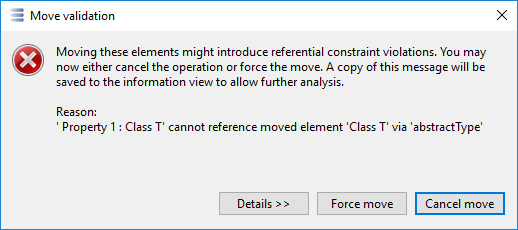
Since the displayed problem existed beforehand and was not introduced by the move itself, it is fine to force the move in this case.
Given is a Logical Function F which is allocated by a LogicalComponent C. When F is moved to a Library, the semantic validation dialog will open:
It is not allowed that a Component allocates a Function that is in a Library. The problem was introduced by the move itself and didn't exist beforehand. Here, the correct decision would be to cancel the move.
Like any other model operation, moving elements can have an impact on existing Diagrams, both, in the source or the target project. Currently Capella has no tool to identify impacted diagrams. The semantic browser view (Window->Show View->Semantic Browser) can help with a manual impact analysis.
A step by step example is given to demonstrate the Transfer View workflow. The intention is to move the following elements to a library:
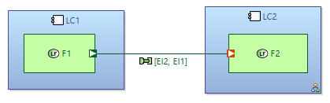
Suppose these elements are in a project that references a library with read-write access policy.
(For demonstration purposes, do not use the Send to Transfer View action in this Example. Locate the elements in the Capella Project Explorer instead. To see Parts and Functional Exchanges, deactivate the corresponding filters through the Capella Project Explorer view menu.)
The first step is to drag elements from the Capella Project Explorer and drop them onto the stage area on the left side of the Transfer view. To demonstrate the iterative workflow, start by adding only two Logical Components LC1 and LC2 to the stage area. The stage area will now look like this:
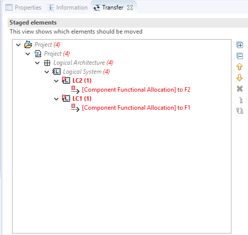
Note there are some elements in red, and the execute button is not enabled. The project root element shows a red (4), indicating that there are 4 problems to resolve in total. An element in red is an element that still references elements in the project. Select the next red element either directly, or by clicking the small down arrow . Hover over the element to trigger the tooltip that shows information about the problematic reference:
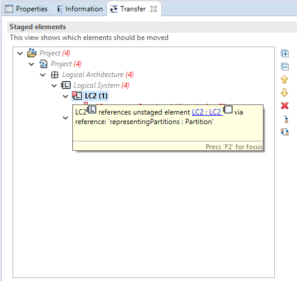
A synthetic rule prevents moving a Component without moving its Part. Add the required element by clicking the Add referenced elements action ( ), or via the context menu. After performing the same step for the other Component, the view looks like this:
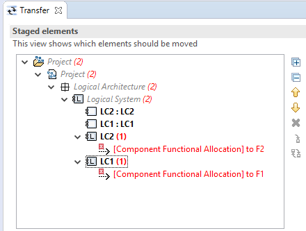
Still, there are 2 elements with backreferences: Each component allocates a function, so we must add the functions too:
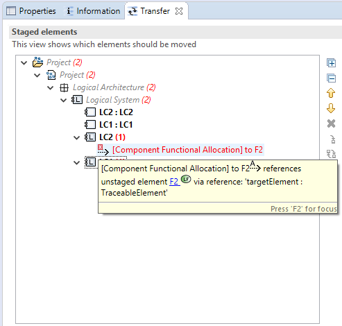
Select the two Component Functional Allocation elements and use the Add referenced elements action to add the functions:
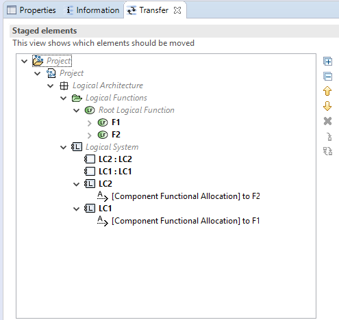
No red elements are left. Now select the new parents for each bold element in the staging area. Drag the Components and Part elements to the right area that shows the library, and drop them onto the Root Logical Component. Do the same for the the Function elements, this time using the Root Logical Function as the new parent:
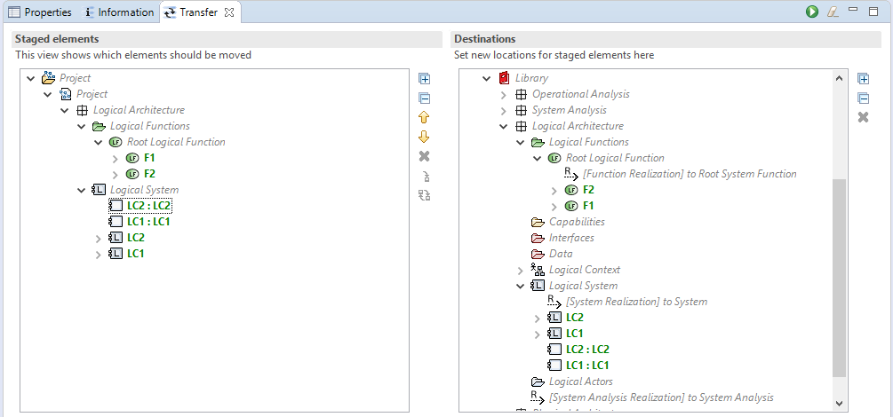
All bold elements have become green, which indicates that a new parent was chosen for each of the elements. The execute button in the view toolbar is now enabled. Click it. Semantic validation will report an error:
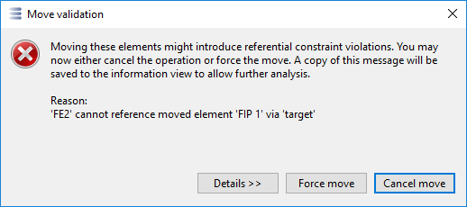
It is not possible to leave the Functional Exchange element in the project. It must be moved too. Cancel the operation, and add the Functional Exchange:
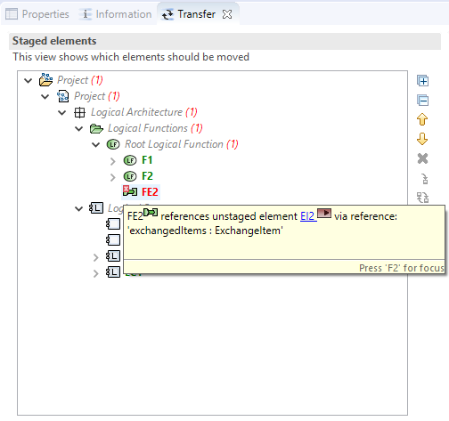
The Functional Exchange has references to 2 Exchange Items. Add the Exchange Items by using the Add referenced elements action.
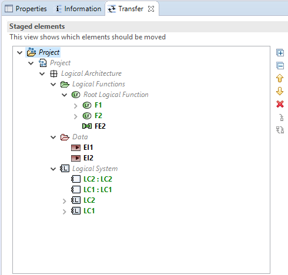
Selecting the Next/Previous element actions with the Ctrl-Key pressed will skip over green elements. Use this as a shortcut to find the next element that needs to be worked on. Drop the Functional Exchange onto the Root Logical Function, and the Exchange Items onto the Logical Data Package:
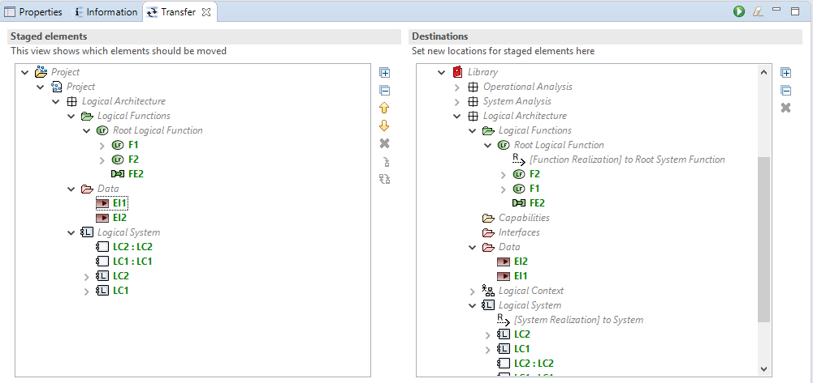
The execute button is again enabled. Select it to execute the move. This time, the operation is successful. Open the Information View to inspect the generated log entries:
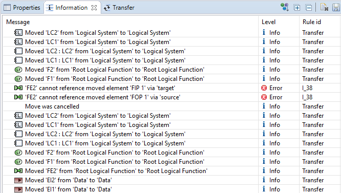
This concludes the example.